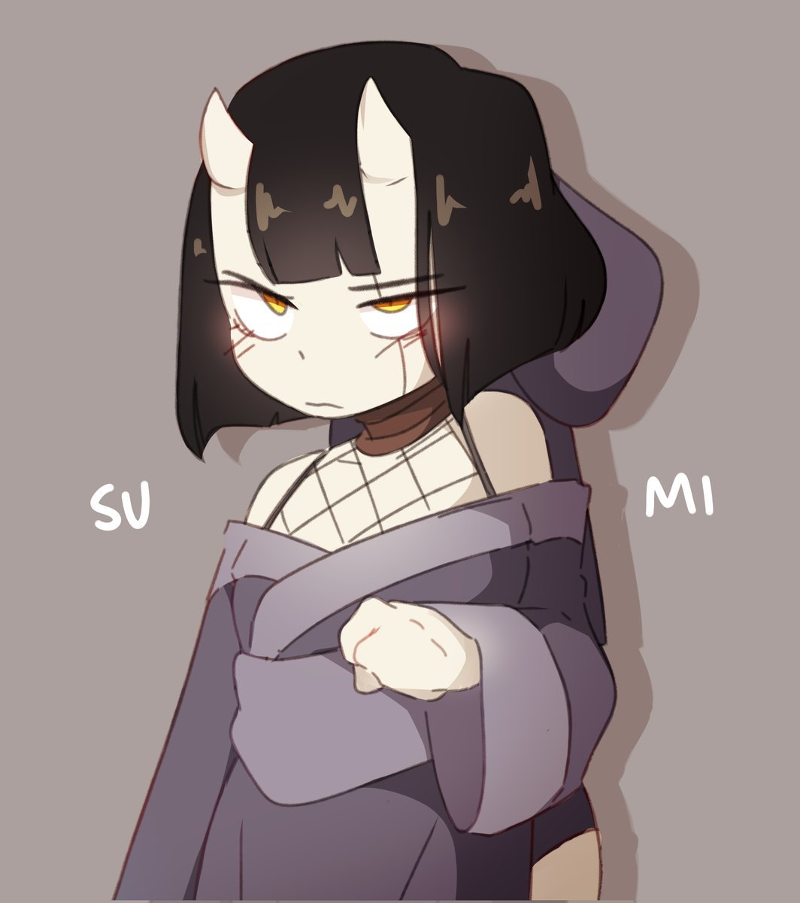

floebooru

2018-10-27_lem_sumi2
📅 Posted:
2018-10-27
Tags
sumi_ezaki_(d-floe)
1girl
bare_shoulders
black_hair
blunt_bangs
blush
bob_cut
closed_mouth
cowboy_shot
drop_shadow
fishnets
grey_background
hand_up
hood
hood_down
horns
japanese_clothes
kimono
lemyawn
long_sleeves
looking_at_viewer
obi
off_shoulder
oni
purple_kimono
sanpaku
sash
scar
scar_across_eye
scar_on_face
short_hair
simple_background
skin-covered_horns
solo
upper_body
upturned_eyes
wide_sleeves
yellow_eyes
← Previous
Home
Next →